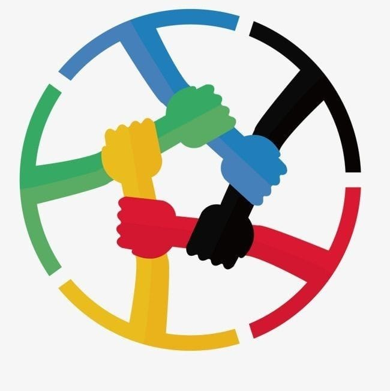

- Candidata 1: Samira Torres Huapaya- 1roA
- Propuestas: Implementar un programa de "Amigos de la Convivencia" donde estudiantes
voluntarios ayuden a resolver conflictos entre compañeros.
- Creación de un espacio de diálogo abierto para estudiantes; Talleres de habilidades sociales.
- Candidata 2: Sara Zavala Gómez - 4toA
- Propuestas: Coordinar el programa de "Amigos de la Convivencia" y dar seguimiento a los casos.
- Organizar actividades de integración entre estudiantes; Promover la cultura de respeto y tolerancia.

- Candidata 3 :Elizabeth Garriazo Pozo- 4toB
- Propuestas: Organizar un taller de reciclaje creativo para
crear productos que puedan ser donados o vendidos.
- Talleres de manualidades; Feria de intercambio de libros y materiales escolares.